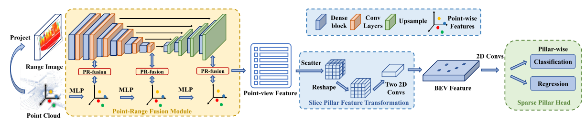
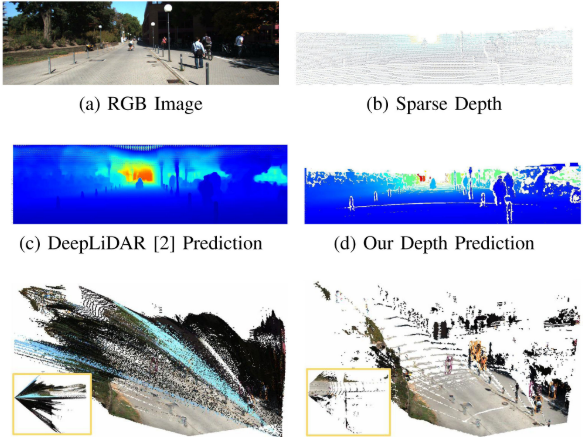
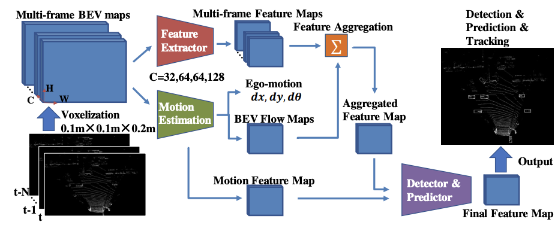

Jiaqi Gu (顾佳琦)
CV / GitHub / Google Scholar / Zhihu / Email: vadin@zju.edu.cn | gujiaqi.gjq@alibaba-inc.com
I am currently an Senior Algorithm Engineer at City Brain Lab, Alibaba DAMO Academy. I received my master's degree in Computer Vision from Zhejiang University in 2022, advised by Prof. Zhiyu Xiang. I got my bachelor's degree also from Zhejiang University in 2019.
ResearchI'm interested in 3D computer vision of autonomous driving and smart cities, and my current work is about 3D vision from 2D images, including 3D visual localization, 3D scene understanding, and 3D vison language model.
Publications

Learning Neural Volumetric Pose Features for Camera Localization
Jingyu Lin, Jiaqi Gu, Bojian Wu, Lubin Fan, Renjie Chen, Ligang Liu, Jieping YeUnder Review [paper]

IROS 2022 [paper]
CVFNet: Real-time 3D Object Detection by Learning Cross View Features
Jiaqi Gu, Zhiyu Xiang, Pan Zhao, Tingming Bai, Lingxuan Wang, Xijun Zhao, Zhiyuan ZhangIROS 2022 [paper]


RA-L with ICRA 2021 Option [paper]
DenseLiDAR: A Real-Time Pseudo Dense Depth Guided Depth Completion Network
Jiaqi Gu, Zhiyu Xiang, Yuwen Ye, Lingxuan WangRA-L with ICRA 2021 Option [paper]

ACCV2020 [paper]
SDP-Net : Scene Flow Based Object Detection and Prediction from Sequential 3D Point Clouds
Yi Zhang*, Yuwen Ye*, Zhiyu Xiang, Jiaqi GuACCV2020 [paper]